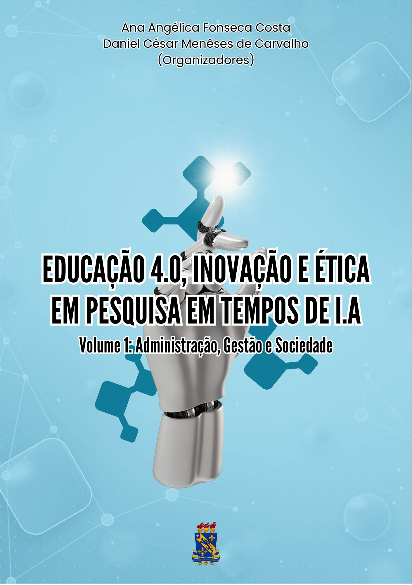
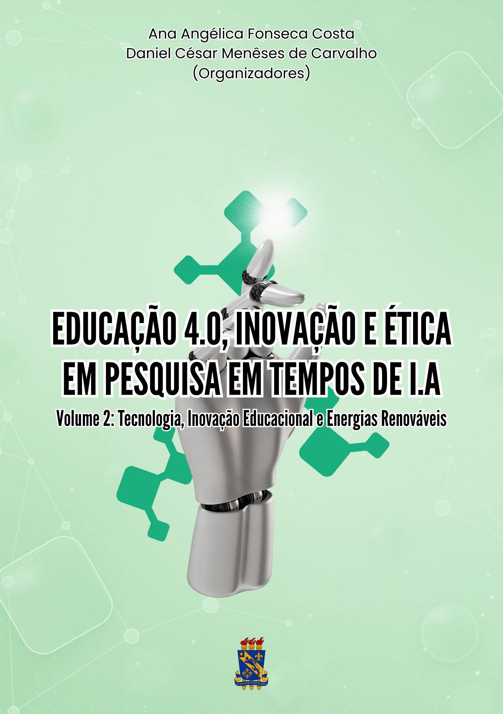

Educação 4.0, Inovação e Ética em Pesquisa em Tempos de I.A
Lançamento oficial da coletânea em dois volumes (versões impressa e digital), reunindo a produção científica de estudantes, professores e pesquisadores vinculados à UAPI/UESPI.
Organizadores: Ana Angélica Fonseca Costa e Daniel César Menêses de Carvalho


A UAPI e a II Jornada Científica (2026)
Criada em 2016, a Universidade Aberta do Piauí (UAPI) democratiza o ensino superior no estado, integrando ensino, pesquisa e extensão em uma rede capilarizada. Em 2026, a II Jornada Científica registrou envio recorde de trabalhos, culminando nesta obra em dois volumes.
Cursos Participantes
- Bacharelado em Administração
- Tecnologia em Sistemas para Internet
- Tecnologia em Energias Renováveis
Apoio e Fomento Institucional
A realização da II Jornada Científica e a publicação dos volumes contaram com o suporte do Governo do Estado do Piauí, da SEDUC, da gestão superior da UESPI — especialmente PROP e PREX (fomento via Edital PROP/PREX Nº 12/2026) —, da entidade financiadora FAPEPI e do NEAD/UESPI.
Administração, Gestão e Sociedade
Unidade I — Empreendedorismo, Inovação e Sustentabilidade em Negócios (8 capítulos)
- A adoção da Inteligência Artificial em micro e pequenas empresas: benefícios, barreiras e desafios no contexto brasileiro
- A atitude empreendedora frente aos desafios da sustentabilidade: uma análise da gestão de negócios de impacto
- A digitalização nas pequenas empresas brasileiras: benefícios, desafios e contribuições para o desempenho, a competitividade e a modernização organizacional
- Distribuição dos Microempreendedores Individuais por setor no Paraná (2019-2023): mudanças no empreendedorismo pós-pandemia
- Implicações da regulamentação de divulgação de sustentabilidade nas estratégias empresariais brasileiras: desafios e oportunidades no pilar ambiental e alinhamento à Agenda 2030
- Networking, capital social e desempenho empreendedor no contexto brasileiro
- Sazonalidade de buscas e vendas no varejo brasileiro: uma análise do potencial do Google Trends na antecipação do comportamento do consumidor
- Uma revisão sistemática da literatura sobre as estratégias e as tendências do empreendedorismo digital no contexto brasileiro
Unidade II — Gestão Institucional, Políticas Públicas e Desenvolvimento Humano (5 capítulos)
- Educação financeira e desenvolvimento de habilidades de gestão consciente dos recursos financeiros: uma revisão sistemática da literatura
- Gestão de pessoas e cultura organizacional nas empresas de pequeno porte: uma revisão narrativa da literatura
- Inovação na gestão de pessoas e propriedade intelectual: uma revisão sistemática da literatura sobre retenção de talentos
- Transformação digital na gestão pública da saúde: Inteligência Artificial, eficiência administrativa e desafios para o SUS
- Gestão por competências no ensino superior público: evidências recentes, desafios institucionais e proposição de um framework integrador
Unidade III — Relatos de Pesquisa e Ensaios Acadêmicos / Resumos Expandidos (9 trabalhos)
- Aplicação de ferramentas da qualidade e tecnologias digitais no controle higiênico-sanitário de alimentos
- Acessibilidade e permanência na Educação 4.0: mapeamento das ações institucionais na UESPI
- JuVeritas, uma proposta para reduzir apropriação artística indevida do uso de Inteligência Artificial
- Confiabilidade de referências científicas recomendadas por Inteligência Artificial generativa na área de Ciência e Tecnologia de Alimentos
- A gestão da inovação na Educação 4.0: desafios éticos na pesquisa científica diante da Inteligência Artificial
- Aplicativo web PyBibX para análise cienciométrica de artigos científicos relacionadas à utilização de e-books
- Do TikTok ao Word: os desafios da educação digital na era do imediatismo
- Ética e inovação na Educação 4.0: disciplina IA e Ética Humana no Sul do Piauí
- Inteligência Artificial e atrofia cognitiva: abordagem reeducativa para minimizar os impactos da terceirização do pensamento
Tecnologia, Inovação Educacional e Energias Renováveis
Unidade I — Educação 4.0, Inteligência Artificial e Práticas Pedagógicas (13 capítulos)
- A IA generativa como copiloto pedagógico na EaD: personalização de tutorias e materiais didáticos nos ambientes virtuais de aprendizagem
- Aplicação de aprendizado de máquina na predição de desempenho acadêmico: uma revisão bibliográfica
- Comunicação e interação social no TEA: contribuições da Inteligência Artificial generativa
- Desafios administrativos e estratégicos para a garantia da inclusão e da acessibilidade nas instituições de ensino brasileiras
- Educação 4.0, inovação e ética no ensino superior em tempos de Inteligência Artificial
- Gestão educacional e liderança pedagógica: a influência da atuação do gestor educacional na qualidade do ensino e nos indicadores de aprendizagem
- Inovação na gestão escolar: contribuições da Inteligência Artificial generativa como ferramenta de apoio às demandas da gestão
- Inteligência Artificial e ética nas pesquisas em Ciências Humanas e da Saúde: desafios para a formação
- Inteligência Artificial generativa como ferramenta de apoio à prática docente
- Inteligência Artificial generativa no Plano Educacional Individualizado: potencialidades e limites para a educação inclusiva
- Memória e quilombos em Maricá: a Lei 10.639/03, o ODS 18 e a responsabilidade social da educação
- Propriedade intelectual e inovação na extensão universitária: uma revisão sistemática sobre transferência do conhecimento e impacto social
- Propriedade intelectual na educação superior: uma revisão sistemática sobre sua inserção no ensino, pesquisa e inovação
Unidade II — Sistemas, Tecnologias Aplicadas e Energias Sustentáveis (7 capítulos)
- Aplicação de Machine Learning na previsão de lucros: uma revisão sistemática da literatura
- Detector de anomalias de campo próximo com Inteligência Artificial embarcada e aprendizagem adaptativa
- Inteligência Artificial e tecnologias digitais aplicadas à gestão da qualidade e à segurança dos alimentos: uma revisão integrativa
- MENA: Modular Educational Notification Architecture
- Plásticos em alimentos e bebidas nas praias: barreiras, alternativas sustentáveis e consumo consciente
- Desenvolvimento de uma plataforma web inteligente baseada em Inteligência Artificial para apoio ao ensino de Matemática nas escolas públicas do Estado do Piauí
- SORA: Software para Organização de Recursos Acadêmicos
Organização e Conselho Editorial e Científico
Conselho Editorial e Científico (17 membros)
- Adriano Olivier de Freitas e Silva
- Danilo Borges da Silva
- Débora Assumpção e Lima
- Deusiney Robson de Araújo Farias
- Edna Yoshiko Senzako
- Elaine Gomes Borges
- Francis de Sousa Fernandes
- Juan de Aguiar Gonçalves
- Jucyara Simplicio dos Santos
- Laércio Ramon da Silva Nascimento
- Laura Melo Barros Bona Miranda
- Leydiane Gleici Oliveira Medeiros
- Marcelo Helvécio Omena de Albuquerque Maximo
- Mauricio Rêgo Mota da Rocha
- Nouga Cardoso Batista
- Samaira Cristina Souza Chagas
- Sidcley D'sordi Alves Alegrini da Silva
Baixe os Volumes 1 e 2 Agora
Aponte a câmera do seu celular para o QR Code abaixo ou clique no botão para acessar a pasta oficial com os livros completos em PDF.
Universidade Aberta do Piauí (UAPI) • Universidade Estadual do Piauí (UESPI)
II Jornada Científica da UAPI — 2026